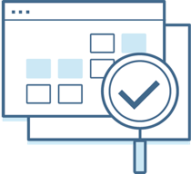

03. Analyzing Behavioral Answers
Analyzing Behavioral Answers
Analyzing Behavioral Answers

You are about to play the role of the interviewer and review other job candidates answers to some of the typical behavioral questions you saw earlier. As you watch, get into the mindset of the interviewer and ask yourself the following:
- Do they use the STAR method?
- What is their tone of voice?
- Do they answer the question concisely or do they get off track?
* NOTE: The answers you are about to see were recorded alone with a webcam so much of the conversational nature of these questions is lost. In a real interview, more back-and-forth discussion is likely to exist.
As a reference, review this interviewing rubric . Use it to collect your thoughts as you watch each answer.